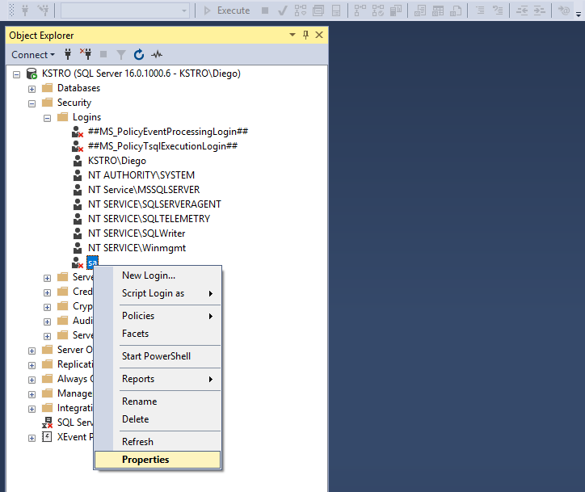
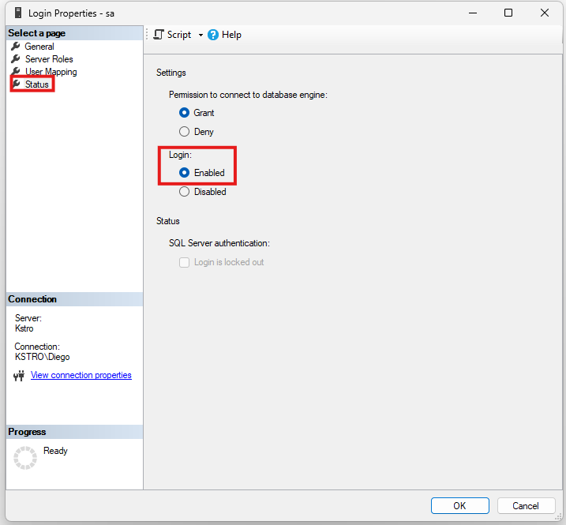
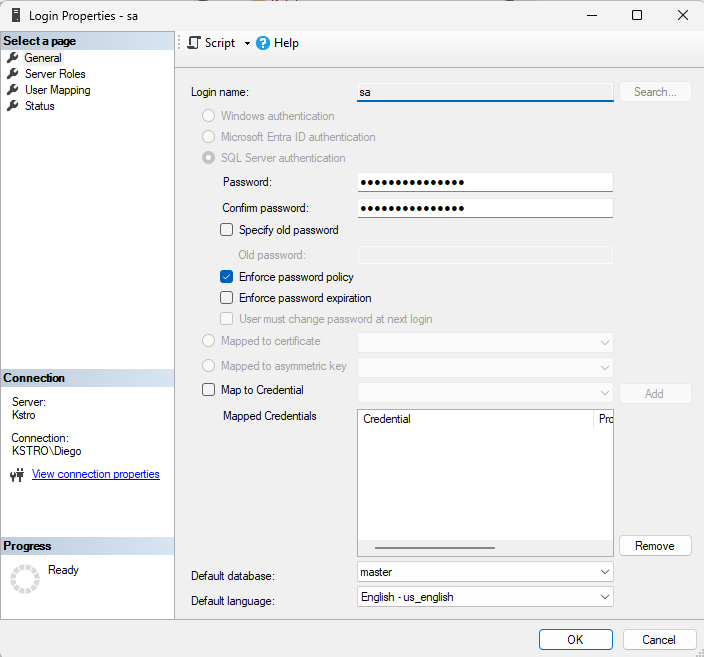
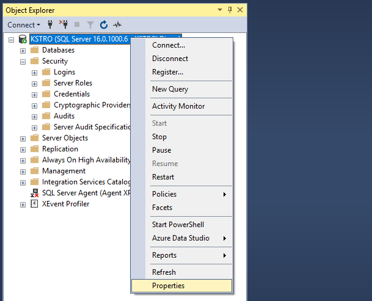
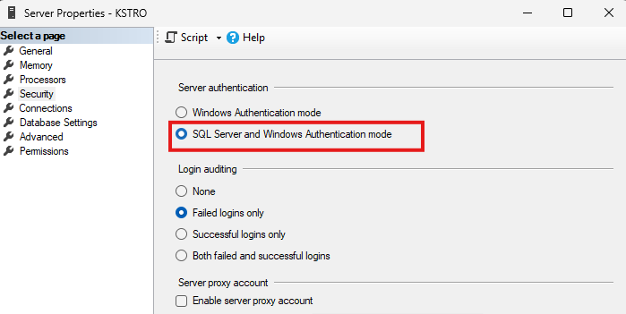
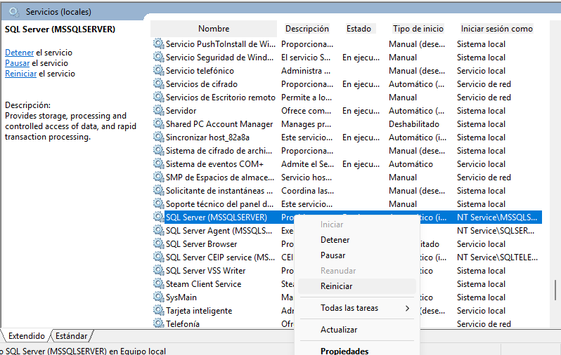

Bienvenido a la práctica fundamental de administración de seguridad en bases de datos. Aprenderás a implementar seguridad integral y el principio de mínimo privilegio en un entorno real.
En la administración de bases de datos relacionales, una de las tareas más críticas es gestionar quién puede entrar al sistema y qué operaciones específicas puede realizar. Una configuración de seguridad adecuada garantiza la confidencialidad, la integridad de los datos y el aislamiento entre diferentes perfiles y aplicaciones.
A lo largo de este laboratorio trabajarás con la base de datos empresarial DB_Gimnasio, la cual almacena clientes y membresías. Sobre este caso de negocio configurarás dos perfiles de acceso completamente distintos con restricciones estrictas de seguridad.
Al completar esta práctica universitaria serás capaz de:
LOGIN a nivel de servidor y un USER a nivel de base de datos vinculado de forma unívoca por su identificador binario (SID).
REVOKE ≠ DENY.
EXECUTE AS USER y REVERT) y funciones de metadatos (fn_my_permissions, HAS_PERMS_BY_NAME).
| Perfil | Login / Usuario | Rol Asignado | Permisos Permitidos | Bloqueos Críticos (Defensa) |
|---|---|---|---|---|
| Analítica | orange |
db_lectura |
GRANT SELECT en todo el esquema dbo |
Denegado por defecto sobre INSERT, UPDATE, DELETE |
| App Web | app_gym |
db_app |
GRANT SELECT, INSERT, UPDATE en Cliente y Membresia |
DENY DELETE en ClienteDENY ALTER en esquema dbo
|
Puedes acceder directamente a cualquier paso o ejercicio del laboratorio haciendo clic en su tarjeta:
Estas credenciales se utilizan únicamente dentro del entorno académico aislado de esta práctica. Nunca reutilices estas contraseñas en sistemas reales.
Para realizar esta práctica necesitas una conexión a SQL Server con una cuenta administradora. Usaremos el login sa (System Administrator), que SQL Server crea por defecto y que pertenece al rol fijo de servidor sysadmin. Solo un administrador tiene privilegios para crear logins, usuarios y roles.
Si estás trabajando con el contenedor Docker oficial de la clase: ¡todo tu entorno ya está listo y configurado!
El contenedor en Linux ya incluye el modo mixto habilitado y el usuario sa activo.
DB_Gimnasio al final de este paso.
| Servidor / Host | localhost,1434 (se usa coma para separar el puerto en SQL Server) |
| Autenticación | SQL Server Authentication |
| Usuario (Login) | sa |
| Contraseña | Admin123! |
| Opciones de red | Marcar la casilla Trust server certificate |
Si tienes SQL Server instalado nativamente en tu máquina Windows (no en Docker), debes asegurarte de que la autenticación mixta y el usuario sa estén habilitados:





services.msc (Servicios de Windows), busca el servicio SQL Server (MSSQLSERVER) y haz clic en Reiniciar. El cambio de modo no surtirá efecto hasta reiniciar el servicio.
En ambientes de producción, renombrar sa mitiga ataques automatizados de fuerza bruta:
-- Renombrar el login sa a admin_seguro (Solo en instalación local)
ALTER LOGIN sa WITH NAME = admin_seguro;
-- Comprobar que conserva el mismo SID (0x01)
SELECT name, sid, is_disabled
FROM sys.server_principals
WHERE sid = 0x01;Nota: No realices este renombramiento en el contenedor Docker de la materia.
Conéctate en SSMS como administrador (sa) y abre una nueva ventana de consulta (Ctrl + N). Ejecuta el siguiente script para crear la base de datos de la práctica:
-- 1) Crear y posicionarse en la base de datos
USE [master];
GO
IF NOT EXISTS (SELECT name FROM sys.databases WHERE name = N'DB_Gimnasio')
BEGIN
CREATE DATABASE DB_Gimnasio;
END
GO
USE DB_Gimnasio;
GO
-- 2) Crear tabla Cliente e insertar datos de prueba
IF OBJECT_ID('dbo.Membresia', 'U') IS NOT NULL DROP TABLE dbo.Membresia;
IF OBJECT_ID('dbo.Cliente', 'U') IS NOT NULL DROP TABLE dbo.Cliente;
GO
CREATE TABLE dbo.Cliente (
id INT IDENTITY(1,1) PRIMARY KEY,
nombre NVARCHAR(100) NOT NULL,
email NVARCHAR(100) NULL,
fecha_alta DATE NOT NULL DEFAULT (GETDATE())
);
GO
INSERT INTO dbo.Cliente (nombre, email)
VALUES (N'Ana Pérez', N'ana@fit.com'),
(N'Luis Díaz', N'luis@fit.com'),
(N'María López', N'maria@fit.com');
GO
-- 3) Crear tabla Membresia con clave foránea e insertar datos
CREATE TABLE dbo.Membresia (
id INT IDENTITY(1,1) PRIMARY KEY,
cliente_id INT NOT NULL,
plan_membresia NVARCHAR(40) NOT NULL,
fecha_inicio DATE NOT NULL DEFAULT (GETDATE()),
fecha_fin DATE NULL,
CONSTRAINT FK_Membresia_Cliente FOREIGN KEY (cliente_id) REFERENCES dbo.Cliente(id)
);
GO
INSERT INTO dbo.Membresia (cliente_id, plan_membresia, fecha_inicio, fecha_fin)
VALUES (1, N'Mensual', '2025-08-01', NULL),
(2, N'Trimestral', '2025-07-15', '2025-10-14');
GOUSE DB_Gimnasio;
GO
SELECT 'Cliente' AS tabla, COUNT(*) AS total_filas FROM dbo.Cliente
UNION ALL
SELECT 'Membresia', COUNT(*) FROM dbo.Membresia;
Una tabla con 2 filas: Cliente con 3 filas y Membresia con 2 filas.
Cada vez que una persona o aplicación intenta realizar cualquier acción en SQL Server, el motor de seguridad evalúa tres preguntas fundamentales en estricto orden:
Se valida a nivel de servidor mediante un Login (con contraseña de SQL Server o credencial de Windows).
El login debe tener asignado un Usuario de Base de Datos en cada base a la que requiera acceso, vinculado por su SID.
Se evalúan los permisos directos del usuario y los heredados a través de sus Roles sobre cada recurso específico.
Comprende la cadena de decisión de arriba hacia abajo:
sysadmin.master (ej: sa, orange, app_gym). Posee un SID único.DB_Gimnasio). Los logins no pueden entrar a menos que tengan usuario aquí.DB_Gimnasio enlazada al Login por su SID (CREATE USER ... FOR LOGIN).db_lectura, db_app). Simplifica y estandariza la seguridad.GRANT (concede), DENY (bloquea explícitamente), REVOKE (borra decisión previa).SCHEMA::dbo), Tabla (dbo.Cliente), Vista, Procedimiento o Columna específica.
Un principal es cualquier entidad que puede solicitar recursos en SQL Server. Los logins existen globalmente en sys.server_principals (en la base master), mientras que los usuarios y roles existen de forma aislada dentro de cada base en sys.database_principals.
sa).Ctrl + N).-- 1) Principals a nivel de SERVIDOR (Logins que pueden conectarse)
SELECT principal_id, name, type_desc, is_disabled
FROM master.sys.server_principals
WHERE type_desc IN ('SQL_LOGIN', 'WINDOWS_LOGIN')
ORDER BY principal_id;
-- 2) Principals a nivel de BASE DE DATOS (Usuarios y Roles de DB_Gimnasio)
USE DB_Gimnasio;
GO
SELECT principal_id, name, type_desc
FROM sys.database_principals
WHERE type_desc IN ('SQL_USER', 'DATABASE_ROLE')
ORDER BY principal_id;
-- 3) Identidad y contexto de tu sesión actual
SELECT ORIGINAL_LOGIN() AS login_con_que_me_conecte,
USER_NAME() AS usuario_activo_en_esta_bd;sa con is_disabled = 0.DB_Gimnasio (como dbo, guest, INFORMATION_SCHEMA, sys).login_con_que_me_conecte = 'sa' y usuario_activo_en_esta_bd = 'dbo'.sa, dentro de DB_Gimnasio tu identidad operativa es dbo (database owner). dbo posee control absoluto sobre la base de datos y no está sujeto a restricciones de permisos comunes.
ORIGINAL_LOGIN() y USER_NAME().
USE DB_Gimnasio; GO antes de consultar sys.database_principals.
Uno de los errores más comunes al iniciar en SQL Server es confundir un login con un usuario:
| Característica | Inicio de Sesión (LOGIN) |
Usuario de Base de Datos (USER) |
|---|---|---|
| ¿Dónde vive? | A nivel de Servidor (catálogo master.sys.server_principals). |
A nivel de cada Base de datos (DB_Gimnasio.sys.database_principals). |
| Función principal | Autenticar: comprobar usuario y contraseña para cruzar la puerta del servidor. | Autorizar: ser el titular de permisos dentro de las tablas y esquemas de esa base. |
| Comando de creación | CREATE LOGIN [nombre] WITH PASSWORD = '...'; |
CREATE USER [nombre] FOR LOGIN [nombre]; |
| ¿Cómo se vinculan? | A través del SID (Security Identifier), una cadena binaria idéntica en ambos objetos. SQL Server nunca enlaza logins con usuarios por el nombre de texto, sino por este SID. | |
¿Qué hace CHECK_POLICY = ON?
Cuando se especifica CHECK_POLICY = ON, SQL Server utiliza la política de contraseñas configurada en Windows o en el dominio correspondiente. No existe una longitud mínima universal exclusiva de SQL Server; este delega la regla al sistema operativo. Para fines de esta práctica utilizaremos contraseñas de al menos 8 caracteres con combinación de mayúsculas, minúsculas, números y símbolos (por ejemplo, UCA@2025).
orange en el servidor con políticas de expiración para cuenta de usuario humano, asignarle su usuario en DB_Gimnasio y verificar la vinculación exacta de sus SIDs.
orange representa a una persona del equipo de analítica de datos. Al ser un usuario humano, se configura con CHECK_EXPIRATION = ON para que el sistema le exija rotar periódicamente su clave.
master y crea el login orange.DB_Gimnasio y crea el usuario para ese login.JOIN entre master.sys.server_principals y sys.database_principals comparando los SIDs.-- 1) Crear el login a nivel de SERVIDOR (en master)
USE [master];
GO
CREATE LOGIN [orange]
WITH PASSWORD = N'UCA@2025',
CHECK_POLICY = ON,
CHECK_EXPIRATION = ON;
GO
-- 2) Crear el usuario dentro de DB_Gimnasio
USE DB_Gimnasio;
GO
CREATE USER [orange] FOR LOGIN [orange];
GO
-- 3) Comprobación del vínculo binario mediante el SID
SELECT s.name AS login_servidor,
u.name AS usuario_bd,
s.sid AS sid_servidor,
u.sid AS sid_usuario
FROM master.sys.server_principals s
JOIN DB_Gimnasio.sys.database_principals u ON s.sid = u.sid
WHERE s.name = 'orange';
Una fila donde login_servidor = 'orange', usuario_bd = 'orange' y los valores de sid_servidor y sid_usuario son exactamente idénticos (ej: 0x03816B...).
orange, dentro de DB_Gimnasio asumirá los derechos del usuario local homónimo.
app_gym), comprendiendo la configuración adecuada de expiración para cuentas de sistemas vs cuentas humanas.
app_gym es una cuenta de aplicación o servicio (la usará un backend web en su cadena de conexión). Para cuentas de aplicación se utiliza CHECK_EXPIRATION = OFF: si la contraseña caducara inesperadamente a medianoche, la aplicación web quedaría fuera de servicio. Su rotación se realiza de forma planificada y controlada por el equipo de DevOps.
app_gym en master con CHECK_EXPIRATION = OFF.app_gym en DB_Gimnasio enlazado al login.-- 1) Crear login para cuenta de servicio (CHECK_EXPIRATION = OFF)
USE [master];
GO
CREATE LOGIN [app_gym]
WITH PASSWORD = N'UCA@2025',
CHECK_POLICY = ON,
CHECK_EXPIRATION = OFF;
GO
-- 2) Crear usuario dentro de DB_Gimnasio
USE DB_Gimnasio;
GO
CREATE USER [app_gym] FOR LOGIN [app_gym];
GO
-- 3) Comparación de políticas entre ambos logins creados
SELECT name, is_policy_checked, is_expiration_checked
FROM master.sys.sql_logins
WHERE name IN ('orange', 'app_gym');
Dos filas: orange con is_expiration_checked = 1 (humano) y app_gym con is_expiration_checked = 0 (aplicación). Ambos con is_policy_checked = 1.
sys.sql_logins.
Si restauras un respaldo (.bak) de DB_Gimnasio en otro servidor SQL Server, los usuarios viajarán dentro de la base de datos con sus SIDs originales. Sin embargo, en el nuevo servidor los logins aún no existen o tendrán SIDs diferentes. Esto genera un usuario huérfano (Error 15023).
Para detectar y reparar un usuario huérfano en SQL Server se utiliza:
-- Detectar usuarios huérfanos en la base actual
SELECT dp.name AS usuario_huerfano, dp.sid
FROM sys.database_principals dp
LEFT JOIN sys.server_principals sp ON dp.sid = sp.sid
WHERE dp.type = 'S' AND sp.sid IS NULL
AND dp.name NOT IN ('guest', 'INFORMATION_SCHEMA', 'sys');
-- Re-vincular un usuario huérfano con su login en el servidor
ALTER USER [app_gym] WITH LOGIN = [app_gym];El Principio de Mínimo Privilegio (Principle of Least Privilege - PoLP) establece que cada usuario, proceso o programa debe tener acceso únicamente a la información y recursos indispensables para desempeñar su función legítima, ni un permiso más ni un minuto más.
En SQL Server, este principio está implementado en la arquitectura del motor mediante el denegado por defecto (Default Deny):
CONNECT. Absolutamente todo lo demás está denegado por defecto hasta que un administrador ejecute un GRANT explícito.
EXECUTE AS USER = 'orange' le pide a SQL Server que cambie temporalmente el contexto de seguridad de la conexión actual para evaluar permisos como si fuéramos orange. Al finalizar siempre debe ejecutarse REVERT.
sa) y colócate en DB_Gimnasio.orange intentando consultar dbo.Cliente.REVERT.USE DB_Gimnasio;
GO
-- 1) Suplantamos la identidad de orange
EXECUTE AS USER = 'orange';
-- 2) Intentamos consultar la tabla Cliente sin tener permisos
SELECT * FROM dbo.Cliente;
-- 3) Restauramos inmediatamente nuestra identidad de administrador
REVERT;
GO
-- 4) Confirmamos que volvimos a ser dbo
SELECT USER_NAME() AS usuario_restaurado;
Se denegó el permiso SELECT en el objeto 'Cliente', base de datos 'DB_Gimnasio', esquema 'dbo'.
orange existe y está autenticado, pero SQL Server bloquea la operación porque ningún permiso ha sido concedido todavía. Esto confirma el funcionamiento real del denegado por defecto.
Antes de escribir cualquier comando de autorización, un DBA diseña una matriz de control de acceso:
| Recurso / Objeto | Perfil Analítica (db_lectura) |
Perfil Aplicación (db_app) |
Justificación de Seguridad |
|---|---|---|---|
dbo.Cliente |
GRANT SELECT | GRANT SELECT, INSERT, UPDATE | Analítica lee; la app registra clientes y modifica datos de contacto. |
dbo.Membresia |
GRANT SELECT | GRANT SELECT, INSERT, UPDATE | Analítica calcula retención; la app crea membresías y actualiza planes. |
DELETE en dbo.Cliente |
Denegado por defecto | DENY DELETE explícito | Defensa en profundidad: una app nunca debe purgar clientes; se desactivan. |
ALTER en esquema dbo |
Denegado por defecto | DENY ALTER explícito | Previene ataques de inyección SQL que intenten alterar o truncar estructuras DDL. |
orange.
Un rol en SQL Server es un principal contenedor que agrupa permisos bajo un perfil operativo. Funciona exactamente igual a un grupo de usuarios en un sistema operativo o un perfil de puesto en una empresa:
db_lectura o db_app).| Tipo de Rol | Ámbito | Ejemplos Frecuentes | Uso |
|---|---|---|---|
| Roles Fijos de Servidor | Instancia | sysadmin, securityadmin, serveradmin |
Mantenimiento general del motor. Predefinidos por SQL Server. |
| Roles Fijos de Base de Datos | Base de datos | db_owner, db_datareader, db_datawriter |
Permisos genéricos rápidos dentro de una base. Predefinidos. |
| Roles Definidos por el Usuario | Base de datos | db_lectura, db_app, db_reportes |
Recomendado para producción. Permite control granular a la medida del negocio. |
db_lectura y db_app dentro de DB_Gimnasio, asociar a orange y app_gym como miembros y verificar la membresía mediante las vistas de catálogo del sistema.
A partir de SQL Server 2012, la sintaxis estándar y recomendada para gestionar membresías es ALTER ROLE [nombre_rol] ADD MEMBER [usuario]; (reemplazando al antiguo procedimiento sp_addrolemember).
sa y asegúrate de estar en DB_Gimnasio.CREATE ROLE.orange al rol db_lectura y app_gym al rol db_app.sys.database_role_members.USE DB_Gimnasio;
GO
-- 1) Crear los dos roles de base de datos
CREATE ROLE db_lectura;
CREATE ROLE db_app;
GO
-- 2) Asignar cada usuario a su rol correspondiente
ALTER ROLE db_lectura ADD MEMBER [orange];
ALTER ROLE db_app ADD MEMBER [app_gym];
GO
-- 3) Consultar las membresías activas en el catálogo de seguridad
SELECT r.name AS nombre_rol,
m.name AS miembro_usuario,
r.type_desc AS tipo_rol,
m.type_desc AS tipo_miembro
FROM sys.database_role_members rm
JOIN sys.database_principals r ON rm.role_principal_id = r.principal_id
JOIN sys.database_principals m ON rm.member_principal_id = m.principal_id
WHERE r.name IN ('db_lectura', 'db_app');Una tabla con dos filas exactas:
nombre_rol = 'db_lectura', miembro_usuario = 'orange'.nombre_rol = 'db_app', miembro_usuario = 'app_gym'.GRANT y DENY en el siguiente paso.
orange y app_gym.
CREATE ROLE antes de la cláusula ALTER ROLE.
Para cada combinación de principal + permiso + objeto asegurable, SQL Server registra una entrada en el catálogo de seguridad. Tres comandos administran ese registro:
| Comando | Qué hace en SQL Server | Analogía del Mundo Real |
|---|---|---|
GRANT |
Crea una entrada que concede el permiso de forma explícita. | Concesión activa: Otorga el derecho explícito de acceso al objeto. |
DENY |
Crea una entrada que prohíbe taxativamente la acción. Tiene prioridad frente a cualquier GRANT que el usuario reciba directa o indirectamente. |
Bloqueo restrictivo: Prohíbe explícitamente el acceso; anula cualquier concesión heredada o directa. |
REVOKE |
Elimina una entrada previa de GRANT o de DENY (borrador). No prohíbe nada por sí mismo. |
Neutralización: Elimina un permiso previamente concedido o denegado, regresando al estado por defecto. |
REVOKE ≠ DENY
Un error conceptual grave es creer que REVOKE es lo opuesto a GRANT. Si un usuario pertenece al rol db_lectura y ejecutas REVOKE SELECT FROM usuario;, el usuario seguirá pudiendo leer, porque REVOKE solo buscó si había un permiso concedido directamente al usuario (no encontró nada que borrar) y el usuario sigue recibiendo el permiso a través de su rol. Para garantizar que no pueda leer, se debe aplicar un DENY explícito.
Cuando un usuario intenta ejecutar una instrucción SQL, el motor evalúa esta cadena en orden estricto:
sysadmin o el propietario del objeto (dbo)?
SÍ: Acceso PERMITIDO de forma absoluta. SQL Server omite cualquier revisión de permisos.
DENY explícito en el usuario o en cualquiera de sus roles?
SÍ: Acceso DENEGADO (Bloqueo inmediato).
GRANT en el usuario, en sus roles o sobre el esquema?
SÍ: Acceso PERMITIDO. El usuario puede realizar la operación.
Acceso DENEGADO POR DEFECTO (Default Deny).
db_lectura y db_app, configurando permisos de esquema, permisos de tabla y bloqueos explícitos de defensa en profundidad.
SELECT a nivel del esquema dbo para db_lectura.SELECT, INSERT, UPDATE a nivel de tabla para db_app.DENY DELETE sobre dbo.Cliente y DENY ALTER sobre el esquema a db_app.sys.database_permissions.USE DB_Gimnasio;
GO
-- 1) Permiso amplio de lectura sobre todo el esquema dbo para Analítica
GRANT SELECT ON SCHEMA::dbo TO db_lectura;
-- 2) Permisos de operación para la aplicación web
GRANT SELECT, INSERT, UPDATE ON dbo.Cliente TO db_app;
GRANT SELECT, INSERT, UPDATE ON dbo.Membresia TO db_app;
-- 3) Defensa en profundidad: denegaciones explícitas de salvaguarda
DENY DELETE ON dbo.Cliente TO db_app;
DENY ALTER ON SCHEMA::dbo TO db_app;
GO
-- 4) Consulta de verificación de permisos otorgados
SELECT pr.name AS receptor_del_permiso,
pe.permission_name AS permiso,
pe.state_desc AS estado,
pe.class_desc AS ambito_del_permiso,
OBJECT_NAME(pe.major_id) AS objeto_especifico
FROM sys.database_permissions pe
JOIN sys.database_principals pr ON pe.grantee_principal_id = pr.principal_id
WHERE pr.name IN ('db_lectura', 'db_app')
ORDER BY pr.name, pe.permission_name;La consulta devolverá:
db_lectura: 1 fila con GRANT sobre SELECT en el ámbito SCHEMA.db_app: 6 filas de GRANT (SELECT, INSERT, UPDATE en ambas tablas), 1 fila de DENY sobre DELETE y 1 fila de DENY sobre ALTER.sys.database_permissions.
Un permiso concedido sobre SCHEMA::dbo cubre automáticamente todas las tablas actuales y cualquier tabla que se cree en el futuro. Compruébalo:
USE DB_Gimnasio;
GO
-- 1) Como administrador, creamos una tabla nueva en dbo
CREATE TABLE dbo.Pago (
id INT IDENTITY(1,1) PRIMARY KEY,
monto DECIMAL(10,2) NOT NULL
);
GO
-- 2) orange puede leerla sin ningún GRANT nuevo (el permiso es del esquema)
EXECUTE AS USER = 'orange';
SELECT * FROM dbo.Pago; -- Funciona correctamente (0 filas)
REVERT;
-- 3) app_gym NO puede leerla (sus permisos son tabla por tabla)
EXECUTE AS USER = 'app_gym';
SELECT * FROM dbo.Pago; -- Error 229 esperado
REVERT;
GO
-- 4) Eliminamos la tabla de prueba
DROP TABLE dbo.Pago;
GOHAS_PERMS_BY_NAME sobre un entorno de prueba aislado.
Haz clic en cada etapa para ver cómo cambia el permiso efectivo de usuario_demo sobre dbo.Cliente:
| Etapa / Acción | Permiso en Rol (rol_demo) |
Permiso en Usuario (usuario_demo) |
Resultado Efectivo | Explicación Técnica |
|---|---|---|---|---|
| Paso 2: Estado Inicial | Ninguno | Ninguno | 0 (Denegado) | Denegado por defecto: no hay ningún permiso concedido. |
| Paso 3: GRANT al rol | GRANT SELECT |
Ninguno | 1 (Permitido) | El usuario hereda la llave (GRANT) de su membresía en el rol. |
| Paso 4: DENY al usuario | GRANT SELECT |
DENY SELECT |
0 (Bloqueado) | El candado (DENY) tiene prioridad sobre la llave heredada. |
| Paso 5: REVOKE del DENY | GRANT SELECT |
Ninguno (Borrador) | 1 (Permitido) | REVOKE borró el candado; la llave del rol vuelve a funcionar. |
| Paso 6: REVOKE del GRANT | Ninguno (Borrador) | Ninguno | 0 (Denegado) | Se borró la llave del rol. Regresa al denegado por defecto. |
USE DB_Gimnasio;
GO
-- PASO 1: Preparar escenario temporal
CREATE USER usuario_demo WITHOUT LOGIN;
CREATE ROLE rol_demo;
ALTER ROLE rol_demo ADD MEMBER usuario_demo;
GO
-- PASO 2: Estado inicial (esperado: 0 y 0)
EXECUTE AS USER = 'usuario_demo';
SELECT HAS_PERMS_BY_NAME('dbo.Cliente', 'OBJECT', 'SELECT') AS lee_Cliente,
HAS_PERMS_BY_NAME('dbo.Membresia', 'OBJECT', 'SELECT') AS lee_Membresia;
REVERT;
GO
-- PASO 3: GRANT al rol (esperado: 1)
GRANT SELECT ON dbo.Cliente TO rol_demo;
GO
EXECUTE AS USER = 'usuario_demo';
SELECT HAS_PERMS_BY_NAME('dbo.Cliente', 'OBJECT', 'SELECT') AS lee_Cliente;
REVERT;
GO
-- PASO 4: DENY directo al usuario (esperado: 0)
DENY SELECT ON dbo.Cliente TO usuario_demo;
GO
EXECUTE AS USER = 'usuario_demo';
SELECT HAS_PERMS_BY_NAME('dbo.Cliente', 'OBJECT', 'SELECT') AS lee_Cliente;
REVERT;
GO
-- PASO 5: REVOKE del DENY (esperado: 1)
REVOKE SELECT ON dbo.Cliente FROM usuario_demo;
GO
EXECUTE AS USER = 'usuario_demo';
SELECT HAS_PERMS_BY_NAME('dbo.Cliente', 'OBJECT', 'SELECT') AS lee_Cliente;
REVERT;
GO
-- PASO 6: REVOKE del GRANT del rol (esperado: 0)
REVOKE SELECT ON dbo.Cliente FROM rol_demo;
GO
EXECUTE AS USER = 'usuario_demo';
SELECT HAS_PERMS_BY_NAME('dbo.Cliente', 'OBJECT', 'SELECT') AS lee_Cliente;
REVERT;
GO
-- PASO 7: Limpieza de objetos de prueba
ALTER ROLE rol_demo DROP MEMBER usuario_demo;
DROP ROLE rol_demo;
DROP USER usuario_demo;
GO
Cuando estás conectado en SSMS como el administrador (sa), eres miembro de sysadmin y actúas como dbo dentro de cualquier base de datos.
sysadmin ni dbo. Si ejecutas una consulta de prueba conectado como sa, la prueba no demuestra absolutamente nada sobre los permisos reales de app_gym o orange.
Para probar de verdad existen dos mecanismos profesionales:
EXECUTE AS USER = 'usuario'; seguido obligatoriamente de REVERT; al terminar.HAS_PERMS_BY_NAME() y la función de tabla fn_my_permissions().
Al realizar pruebas de borrado (DELETE), debes saber interpretar el código de error:
EXECUTE AS o si el usuario recibió accidentalmente el permiso correspondiente.DENY DELETE aplicado a db_app bloquea las eliminaciones de clientes, generando el Error 229 esperado.
EXECUTE AS USER = 'app_gym'; para adoptar la identidad de la app.DELETE sobre dbo.Cliente.REVERT; para restaurar tu sesión de administrador.USE DB_Gimnasio;
GO
-- 1) Cambiar contexto a app_gym
EXECUTE AS USER = 'app_gym';
-- 2) Intentar borrar un cliente (debe fallar por seguridad)
DELETE FROM dbo.Cliente WHERE id = 1;
-- 3) Restaurar la sesión de administrador
REVERT;
GO
-- 4) Confirmar que estás como dbo
SELECT USER_NAME() AS usuario_actual;
Se denegó el permiso DELETE en el objeto 'Cliente', base de datos 'DB_Gimnasio', esquema 'dbo'.
app_gym no puede purgar registros de clientes bajo ninguna circunstancia, protegiendo los datos contra errores de programación o ataques de inyección SQL destructivos.
DELETE.
GRANT (SELECT, INSERT y UPDATE) funcionan sin inconvenientes para app_gym.
USE DB_Gimnasio;
GO
EXECUTE AS USER = 'app_gym';
-- 1) Probar SELECT
SELECT COUNT(*) AS total_clientes FROM dbo.Cliente;
-- 2) Probar INSERT de un nuevo cliente
INSERT INTO dbo.Cliente (nombre, email)
VALUES (N'Carlos Mena', N'carlos@fit.com');
-- 3) Probar UPDATE sobre datos de contacto
UPDATE dbo.Cliente
SET email = N'ana.perez@fit.com'
WHERE id = 1;
-- 4) Probar INSERT de una membresía vinculada
INSERT INTO dbo.Membresia (cliente_id, plan_membresia, fecha_inicio, fecha_fin)
VALUES (3, N'Mensual', '2025-09-01', NULL);
REVERT;
GO
Todas las operaciones se ejecutan satisfactoriamente reportando (1 filas afectadas) sin ningún error.
orange no puede alterar datos (solo lectura estricta) y que app_gym tiene prohibido alterar estructuras DDL en el esquema (DENY ALTER).
USE DB_Gimnasio;
GO
-- 1) orange intentando INSERT (debe fallar con Error 229)
EXECUTE AS USER = 'orange';
INSERT INTO dbo.Cliente (nombre) VALUES (N'Intruso');
REVERT;
GO
-- 2) app_gym intentando alterar la tabla Cliente (debe fallar con Error 229 por DENY ALTER)
EXECUTE AS USER = 'app_gym';
ALTER TABLE dbo.Cliente ADD telefono NVARCHAR(20) NULL;
REVERT;
GOAmbas instrucciones son rechazadas de inmediato por SQL Server con el Error 229.
fn_my_permissions.
USE DB_Gimnasio;
GO
-- 1) Permisos efectivos de orange sobre dbo.Cliente
EXECUTE AS USER = 'orange';
SELECT 'orange' AS usuario, entity_name, subentity_name, permission_name
FROM fn_my_permissions('dbo.Cliente', 'OBJECT');
REVERT;
GO
-- 2) Permisos efectivos de app_gym sobre dbo.Cliente
EXECUTE AS USER = 'app_gym';
SELECT 'app_gym' AS usuario, entity_name, subentity_name, permission_name
FROM fn_my_permissions('dbo.Cliente', 'OBJECT');
REVERT;
GOorange: únicamente una fila con permission_name = 'SELECT'.app_gym: tres filas con SELECT, INSERT y UPDATE. No aparece DELETE.fn_my_permissions devuelve la resolución final de todos los roles, esquemas, GRANTs y DENYs combinados. Confirma que la matriz diseñada en el Ejercicio 4 coincide al 100% con la realidad operativa del motor.
fn_my_permissions para ambos usuarios.
Al finalizar esta sección, el estudiante debe poder:
CONTAINMENT = PARTIAL.sp_configure y RECONFIGURE.CONTAINMENT = PARTIAL.ALTER DATABASE.CREATE USER ... WITH PASSWORD).master).model (Error 12803) y entender su comportamiento como plantilla sin alteración retroactiva.sys.databases y sys.database_principals) si una base es NONE o PARTIAL y el tipo de autenticación de sus usuarios.master, SID de instancia)
En el modelo tradicional de SQL Server, una base de datos tiene una fuerte dependencia de la instancia donde reside: los usuarios dependen de Logins almacenados en la base de sistema master, y la configuración de collation o metadatos depende de opciones globales del servidor.
Una base de datos parcialmente contenida (autocontenida) es aquella diseñada para reducir dependencias respecto a la instancia de SQL Server. Al aislar las identidades y ciertas configuraciones dentro del propio archivo de la base de datos, esta gana autonomía y facilita notablemente su portabilidad.
El usuario requiere obligatoriamente que exista un LOGIN en el servidor para poder autenticarse.
El usuario se autentica directamente contra la base de datos utilizando sus credenciales internas.
Un usuario contenido reduce la dependencia de un LOGIN del servidor, pero continúa sujeto a los permisos y roles definidos dentro de la base de datos.
Esta distinción es uno de los conceptos más evaluados en administración de bases de datos. Comparemos los dos códigos:
-- 1. Nivel Servidor (master)
CREATE LOGIN james
WITH PASSWORD = 'Admin123!';
GO
-- 2. Nivel Base de Datos
USE DB_Gimnasio;
GO
CREATE USER james
FOR LOGIN james;
GO-- Requiere que la BD sea PARTIAL
USE pubs;
GO
-- Crea usuario Y define su clave aquí
CREATE USER james
WITH PASSWORD = 'Admin123!';
GO
La instrucción CREATE USER james WITH PASSWORD = '...' es sustancialmente diferente porque crea un usuario contenido con contraseña. No necesita previamente un CREATE LOGIN james. El usuario y sus credenciales se encuentran almacenados y resueltos directamente dentro de la base parcialmente contenida.
El servidor continúa ejecutando SQL Server, pero la autenticación de este usuario se resuelve en el contexto de la base contenida y no mediante un LOGIN equivalente en master.
| Característica | Usuario tradicional | Usuario contenido |
|---|---|---|
| LOGIN en servidor | Sí (en master) |
No necesariamente (no lo requiere) |
| USER en base | Sí | Sí |
| Contraseña definida en LOGIN | Sí | No |
| Contraseña definida en USER | No | Sí (directamente en la BD) |
| Dependencia de master/login | Mayor | Menor |
| Portabilidad entre servidores | Menor (riesgo de usuarios huérfanos) | Mayor (viaja con los archivos de la BD) |
| Base debe ser PARTIAL | No (funciona con NONE) |
Sí, indispensable para WITH PASSWORD |
| Mecanismo de Autenticación | Servidor + mapeo por SID | Base de datos local (DATABASE) |
El objetivo principal de las bases parcialmente contenidas es reducir dependencias de la instancia. En entornos empresariales modernos (como clústeres de alta disponibilidad AlwaysOn, migraciones a la nube o ambientes multitenant), mover una base de datos tradicional implica un problema clásico:
Con una base parcialmente contenida, el usuario y sus credenciales viajan dentro de la propia base de datos (en su archivo .mdf y backups .bak). Al restaurar la base en otra instancia de SQL Server, el usuario puede conectarse de inmediato sin necesidad de volver a crear o reparar logins en master.
Precisión técnica indispensable: Las bases de datos contenidas reducen dependencias de la instancia. No afirmamos que eliminen absolutamente todas las dependencias ni que la base sea 100% independiente del motor de SQL Server.
Por seguridad, SQL Server viene configurado de fábrica con esta característica deshabilitada a nivel de instancia. Para permitir que cualquier base pueda usar contención, el administrador (sysadmin) debe habilitarla globalmente:
USE master;
GO
-- 1) Activar la opción de autenticación de bases contenidas
EXEC sp_configure 'contained database authentication', 1;
GO
-- 2) Aplicar el cambio inmediatamente en memoria
RECONFIGURE;
GO| Instrucción / Parámetro | Significado técnico |
|---|---|
sp_configure |
Procedimiento almacenado del sistema para consultar o modificar opciones globales de configuración del motor SQL Server. |
'contained database authentication' |
Nombre exacto de la opción que controla si el motor permite autenticación de usuarios contenidos en bases con PARTIAL. |
1 |
Valor de activación (1 = Habilitado, 0 = Deshabilitado). |
RECONFIGURE |
Instrucción que actualiza el valor en ejecución (run_value) en el motor sin requerir reiniciar el servicio de SQL Server. |
0, cualquier intento de crear o alterar una base a CONTAINMENT = PARTIAL fallará con el Error 12824.
Para comprobar que la opción quedó correctamente aplicada en ejecución:
EXEC sp_configure 'contained database authentication';
GOconfig_value como run_value deben reportar 1.
Podemos crear una base de datos indicando desde su nacimiento que será parcialmente contenida:
USE master;
GO
CREATE DATABASE prueba
CONTAINMENT = PARTIAL;
GOEn SQL Server existen dos valores relevantes para la cláusula CONTAINMENT:
NONE: Base de datos tradicional no contenida (comportamiento predeterminado). Todas las identidades dependen de logins de instancia.PARTIAL: Base de datos parcialmente contenida. Habilita usuarios contenidos con contraseña, collation a nivel de base y reducción de dependencias.
Se denomina parcialmente contenida porque SQL Server permite reducir muchas dependencias de la instancia, pero todavía pueden existir elementos o funcionalidades que crucen el límite entre la base de datos y el servidor (por ejemplo, el collation de la instancia para tablas temporales compartidas en tempdb, transacciones distribuidas entre bases o llamadas a procedimientos extendidos del sistema operativo).
Si una base de datos ya fue creada previamente con el modelo tradicional (como pubs), no es necesario recrearla desde cero. Podemos modificarla en caliente mediante ALTER DATABASE:
USE master;
GO
ALTER DATABASE pubs
SET CONTAINMENT = PARTIAL;
GOALTER DATABASE pubs SET CONTAINMENT = PARTIAL; NO convierte automáticamente a los usuarios tradicionales existentes en usuarios contenidos. La instrucción habilita las capacidades de contención en la base. Los usuarios existentes continúan asociados a sus respectivos logins de servidor.
Profundización opcional: Para transformar un usuario tradicional existente a contenido sin borrarlo, SQL Server proporciona el procedimiento del sistema sp_migrate_user_to_contained.
Una vez que la base de datos tiene contención parcial activada, podemos crear directamente usuarios con credenciales propias:
USE pubs;
GO
-- Usuario contenido con contraseña autónoma (sin LOGIN previo en el servidor)
CREATE USER james
WITH PASSWORD = 'Admin123!';
GOAdmin123! es estrictamente didáctica para este laboratorio. Nunca utilices contraseñas sencillas ni las reutilices en servidores corporativos reales.
Porque james es un usuario contenido. Su hash de contraseña y sus atributos de autenticación residen exclusivamente dentro de la tabla de catálogo interna de la base pubs.
Cuando un usuario contenido con contraseña no tiene un Login correspondiente en master, la conexión debe especificar directamente la base de datos destino.
localhost o el nombre de tu instancia SQL Server.SQL Server Authentication.jamesAdmin123!pubs (o prueba).
En SQL Server Management Studio (SSMS):
1. En la ventana Connect to Server, escribe el usuario y contraseña.
2. Haz clic en el botón Options >> (abajo a la derecha).
3. Selecciona la pestaña Connection Properties.
4. En el campo Connect to database, escribe directamente pubs (en vez de <default>).
master), el servidor buscará a james en sys.server_principals. Al no existir ningún Login con ese nombre allí, rechazará la conexión inmediatamente arrojando Error 18456 (Login failed for user 'james'). SQL Server necesita saber de antemano en qué base de datos debe autenticar a ese usuario contenido.
Podemos comprobar el estado de contención y el tipo de autenticación con dos consultas oficiales:
SELECT
name,
containment,
containment_desc
FROM sys.databases
WHERE name IN ('master', 'pubs', 'prueba', 'DB_Gimnasio');
GO0 = NONE (tradicional), 1 = PARTIAL (parcialmente contenida).
Para auditar el tipo de autenticación de los usuarios dentro de la base:
USE pubs;
GO
SELECT
name,
type_desc,
authentication_type,
authentication_type_desc
FROM sys.database_principals
WHERE principal_id > 4;
GOauthentication_type_desc clasifica cómo se autentica la identidad:
INSTANCE: Usuario tradicional cuyo proceso de autenticación fue resuelto por la instancia (Login con SID).DATABASE: Usuario contenido autenticado directamente por el catálogo interno de la base de datos.
Crear un usuario con CREATE USER james WITH PASSWORD = '...' únicamente resuelve la autenticación (saber quién es el sujeto). NO le concede automáticamente ningún permiso sobre los datos.
El usuario recién creado no puede hacer SELECT, INSERT, UPDATE, DELETE ni ALTER en ninguna tabla hasta que un administrador le asigne permisos de manera explícita o a través de roles.
USE pubs;
GO
-- Opción A: Agregar al rol de lectura estándar
ALTER ROLE db_datareader ADD MEMBER james;
GO
-- Opción B: Permiso granular específico sobre un objeto (Mínimo Privilegio)
-- GRANT SELECT ON dbo.authors TO james;
-- GOPrincipio de Mínimo Privilegio: Que una base sea parcialmente contenida no altera en absoluto la regla de oro: todo usuario debe recibir exclusivamente los permisos estrictamente necesarios para su función.
Habilitar bases parcialmente contenidas permite que un usuario con rol de dueño de base de datos (db_owner) pueda aprovisionar usuarios y contraseñas dentro de su base sin requerir la intervención de un administrador de infraestructura (sysadmin). Si bien esto otorga gran agilidad y portabilidad, debe usarse con conciencia: los administradores de sistemas deben auditar periódicamente las bases contenidas y asegurar políticas de contraseñas robustas.
CREATE LOGIN tradicional
WITH PASSWORD = '...';
USE prueba;
CREATE USER tradicional
FOR LOGIN tradicional;-- En base con CONTAINMENT = PARTIAL:
USE prueba;
CREATE USER contenido
WITH PASSWORD = '...';
Respuesta técnica: El Escenario A (tradicional) requiere obligatoriamente que exista el LOGIN a nivel de servidor (master), ya que el usuario en la base solo es un puntero vinculado por SID.
En cambio, el Escenario B (usuario contenido) no necesita ningún LOGIN equivalente en el servidor porque su proceso de autenticación y sus credenciales están completamente contenidos dentro de la base de datos prueba.
CONTAINMENT = PARTIAL), aprovisionar un usuario contenido con contraseña propia (sin login previo en el servidor), auditar su tipo de autenticación en el catálogo y comprobar la conexión y aplicación de permisos.
Una base parcialmente contenida almacena las credenciales de sus usuarios internamente. Para que funcione, el servidor debe permitir la característica mediante sp_configure 'contained database authentication', 1 y la base debe declararse con CONTAINMENT = PARTIAL.
USE master;
GO
-- 1. Habilitar la autenticación de bases contenidas
EXEC sp_configure 'contained database authentication', 1;
GO
RECONFIGURE;
GO
-- 2. Confirmar que el valor en ejecución es 1
EXEC sp_configure 'contained database authentication';
GOUSE master;
GO
-- 3. Crear base de datos parcialmente contenida
IF DB_ID('prueba') IS NOT NULL
BEGIN
ALTER DATABASE prueba SET SINGLE_USER WITH ROLLBACK IMMEDIATE;
DROP DATABASE prueba;
END;
GO
CREATE DATABASE prueba
CONTAINMENT = PARTIAL;
GO
-- 4. Comprobar el estado de contención en el catálogo del sistema
SELECT name, containment, containment_desc
FROM sys.databases
WHERE name = 'prueba';
GOUSE prueba;
GO
-- 5. Crear usuario contenido con contraseña (sin LOGIN en el servidor)
CREATE USER james
WITH PASSWORD = 'Admin123!';
GO
-- 6. Auditar el tipo de autenticación en sys.database_principals
SELECT
name,
type_desc,
authentication_type,
authentication_type_desc
FROM sys.database_principals
WHERE name = 'james';
GO
Para demostrar que la autenticación es independiente de la autorización, crearemos una tabla de prueba en prueba, concederemos únicamente SELECT al usuario james y validaremos el acceso con suplantación segura:
USE prueba;
GO
-- Crear tabla de prueba
CREATE TABLE dbo.Avisos (
id INT IDENTITY(1,1) PRIMARY KEY,
mensaje VARCHAR(100) NOT NULL
);
INSERT INTO dbo.Avisos (mensaje) VALUES ('Acceso concedido a base contenida');
GO
-- Conceder permiso selectivo a james
GRANT SELECT ON dbo.Avisos TO james;
GO
-- Probar acceso bajo la identidad de james
EXECUTE AS USER = 'james';
SELECT USER_NAME() AS UsuarioActual, mensaje FROM dbo.Avisos;
REVERT;
GOsys.databases: La base prueba muestra containment = 1 y containment_desc = 'PARTIAL'.sys.database_principals: El usuario james tiene type_desc = 'SQL_USER', authentication_type = 2 y authentication_type_desc = 'DATABASE'.james puede consultar la tabla dbo.Avisos y su identidad activa es james.james existe y se autentica como identidad de primer orden en la base de datos sin necesidad de un login en master. Al mismo tiempo, demuestra que su autorización respeta estrictamente el principio de mínimo privilegio.
sys.databases para la base prueba (reportando PARTIAL) y la consulta de sys.database_principals para james (reportando DATABASE).
Una pregunta técnica frecuente entre administradores es: ¿Qué ocurre si intentamos hacer la base de sistema model autocontenida?
model es una base de datos del sistema que SQL Server utiliza como plantilla estándar cada vez que se ejecuta una instrucción CREATE DATABASE. Opciones de configuración, tablas o procedimientos que residan en model se copian automáticamente a las nuevas bases creadas posteriormente.
Siguiendo las mejores prácticas de administración, antes de intervenir cualquier base del sistema debemos conocer y registrar su estado inicial:
-- Paso 1: Consultar y registrar la configuración original de model
SELECT name, containment, containment_desc
FROM sys.databases
WHERE name = 'model';
GOmodel → containment = 0 (NONE).
A continuación, probemos ejecutar la instrucción de contención sobre model:
USE master;
GO
ALTER DATABASE model
SET CONTAINMENT = PARTIAL;
GO
SQL Server prohíbe taxativamente activar contención en bases de datos del sistema (master, model, tempdb y msdb). El motor de bases de datos depende de estas instancias para funciones críticas de servidor, servicios de replicación, catálogos compartidos y resolución de tareas de fondo. Habilitar contención en model comprometería la inicialización y el funcionamiento de la propia instancia.
Aun en los aspectos y configuraciones donde model actúa como plantilla para nuevas bases de datos, modificar la plantilla NUNCA altera retroactivamente las bases existentes.
En el diseño de SQL Server, cualquier parámetro explícito indicado en una instrucción CREATE DATABASE tiene prioridad absoluta sobre cualquier configuración por defecto o heredada:
-- Aunque existieran plantillas con opciones particulares, la sintaxis explícita manda:
CREATE DATABASE prueba_explica
CONTAINMENT = NONE;
GO
model es una base de datos fundamental para la estabilidad del motor. No debe utilizarse como entorno de experimentación descontrolada en servidores productivos. En entornos de laboratorio, cualquier verificación sobre bases del sistema debe concluir siempre validando que su configuración retorne al estado original.
USE master;
GO
-- Garantizar que model conserva su configuración original de sistema
ALTER DATABASE model SET CONTAINMENT = NONE;
GO
-- Confirmar estado de model
SELECT name, containment, containment_desc
FROM sys.databases
WHERE name = 'model';
GOEn la gestión corporativa de bases de datos, seguir estándares de hardening protege la información frente a accesos no autorizados y amenazas persistentes:
Mantén siempre CHECK_POLICY = ON para obligar al motor a verificar longitud mínima, caracteres especiales y números mediante las políticas del sistema operativo.
Usa CHECK_EXPIRATION = ON para personas físicas (como orange) y OFF para aplicaciones (como app_gym) combinándolo con rotación planificada en bóvedas de secretos (como Azure Key Vault o HashiCorp Vault).
Nunca uses cuentas sysadmin o sa para cadenas de conexión de aplicaciones web. Concede estrictamente las tablas que la app consulta.
Asigna permisos a roles de base de datos y añade a los usuarios como miembros. Esto previene la acumulación de permisos huérfanos y simplifica las auditorías.
Aun cuando una aplicación no tenga permiso de borrado concedido, refuerza la regla con un DENY DELETE explícito para blindar tablas críticas ante fallos de configuración futuros.
public ni Habilitar guest
El rol public lo comparten automáticamente todos los usuarios. Conceder permisos sobre public abre puertas traseras para cualquier usuario conectado.
Al utilizar usuarios contenidos con contraseña, especifica siempre el parámetro Database / Initial Catalog en las cadenas de conexión (evita apuntar a master por defecto). Los administradores de infraestructura deben supervisar las bases con CONTAINMENT = PARTIAL para auditar las cuentas aprovisionadas por db_owner y desactivar contained database authentication si la instancia no requiere este modelo.
Si una tabla contiene datos sensibles (como salarios o contraseñas), puedes conceder SELECT solo sobre columnas específicas:
-- Permitir leer solo id y nombre de Cliente, pero NO el email
GRANT SELECT ON dbo.Cliente (id, nombre) TO rol_restringido;Para auditar intentos fallidos de conexión (State 58 o contraseñas incorrectas) se consulta el log de errores de SQL Server:
-- Consultar los últimos 100 eventos de autenticación en el log
EXEC sys.xp_readerrorlog 0, 1, 'Login failed';Antes de solicitar asistencia docente, busca aquí el código numérico de error o síntoma que te muestra SSMS. Puedes filtrar en tiempo real escribiendo en el buscador o haciendo clic en las categorías:
| Código | ¿Qué significa? | Causa probable | ¿Cómo comprobarlo? | ¿Cómo corregirlo? |
|---|---|---|---|---|
| 18456 Autenticación |
Login failed for user |
Contraseña incorrecta o el servidor está configurado en modo "solo Windows" (State 58). | Revisa los últimos logs con xp_readerrorlog buscando el State. |
Verifica la contraseña; activa el modo mixto en propiedades del servidor y reinicia el servicio SQL. |
| 18470 Autenticación |
The account is disabled |
El login (por ejemplo, sa) está deshabilitado en el servidor. |
SELECT is_disabled FROM master.sys.server_principals WHERE name = 'sa'; |
Ejecuta ALTER LOGIN sa ENABLE; o actívalo en Properties → Status. |
| 15025 Objeto |
The server principal already exists |
El login que intentas crear ya existe en el servidor (ejecutaste dos veces CREATE LOGIN). |
SELECT name FROM sys.server_principals WHERE name = 'orange'; |
No es un error grave: el login ya está listo. Continúa con el siguiente paso. |
| 15023 Objeto |
User, group, or role already exists |
El usuario o rol ya fue creado previamente en esta base de datos. | SELECT name FROM sys.database_principals WHERE name = 'db_app'; |
El objeto ya existe. Continúa con el siguiente paso. |
| 15063 Vínculo |
The login already has an account under a different user name |
Ese login ya está vinculado a otro usuario dentro de la misma base de datos. | Consulta con JOIN entre server_principals y database_principals por SID. |
Un login solo puede enlazarse a un único usuario por cada base de datos. |
| 15116 / 15118 Políticas |
Password validation failed |
La contraseña ingresada no satisface la directiva de complejidad del sistema operativo. | Verifica si tu contraseña tiene menos de 8 caracteres o carece de números y símbolos. | Usa una combinación robusta (ej: UCA@2025 con mayúscula, minúscula, números y símbolos). |
| 15151 Contexto |
Cannot find the object / principal |
Nombre mal escrito o estás posicionado en la base de datos equivocada (ej: master). |
SELECT DB_NAME(); para comprobar la base de datos actual. |
Ejecuta USE DB_Gimnasio; GO y confirma el nombre exacto de la tabla o rol. |
| 15517 Contexto |
Cannot execute as the database principal |
El usuario al que intentas suplantar no existe en la base de datos actual. | SELECT name FROM sys.database_principals WHERE name = 'app_gym'; |
Ejecuta USE DB_Gimnasio; GO antes del EXECUTE AS USER. |
| 916 Contexto |
The server principal is not able to access database |
Intentaste cambiar de base de datos con USE mientras estabas suplantando a un usuario restringido. |
SELECT USER_NAME(); |
Ejecuta REVERT; para regresar a dbo antes de ejecutar un comando USE. |
| 229 Permisos |
The ... permission was denied on the object |
El usuario no posee un GRANT o tiene un DENY sobre la tabla o esquema. |
Consulta fn_my_permissions('dbo.Cliente', 'OBJECT'). |
En pruebas de restricción es el éxito esperado. Si no lo esperabas, revisa los permisos asignados al rol. |
| 230 Permisos |
The ... permission was denied on the column |
Existe una restricción granular a nivel de columna que bloquea el campo solicitado. | Consulta los permisos específicos de columnas en sys.database_permissions. |
Omite la columna restringida o concede GRANT SELECT (columna). |
| 547 Integridad |
Conflicted with the REFERENCE constraint |
Intentaste borrar un registro padre (cliente) que tiene hijos vinculados (membresías). | SELECT * FROM dbo.Membresia WHERE cliente_id = 1; |
No es un error de permisos. Si aparece 547, la operación alcanzó la comprobación de integridad referencial. Verifique si olvidó EXECUTE AS o si el usuario recibió accidentalmente el permiso correspondiente. |
| 12824 Configuración |
The sp_configure value 'contained database authentication' must be set to 1 |
Intentaste crear o modificar una base a CONTAINMENT = PARTIAL sin habilitar primero la opción global en la instancia. |
EXEC sp_configure 'contained database authentication', 1; RECONFIGURE; |
Habilita la autenticación de bases contenidas a nivel de servidor con sp_configure y aplica el cambio con RECONFIGURE. |
| 33233 Contención |
You can only create a user with a password in a contained database |
Intentaste ejecutar CREATE USER ... WITH PASSWORD en una base de datos tradicional no contenida (CONTAINMENT = NONE). |
ALTER DATABASE pubs SET CONTAINMENT = PARTIAL; |
Convierte primero la base a parcialmente contenida con ALTER DATABASE [bd] SET CONTAINMENT = PARTIAL; o crea un login tradicional en el servidor. |
| 12803 Sistema |
Containment cannot be enabled for database 'model' because it is a system database |
Intentaste cambiar la contención de una base de datos del sistema (como model, master o tempdb). |
SELECT name, containment_desc FROM sys.databases; |
SQL Server prohíbe habilitar contención en bases de sistema para salvaguardar la estabilidad de la instancia. Aplica contención únicamente sobre bases de usuario. |
Estás ejecutando la consulta como sa o dbo. SQL Server no evalúa permisos para administradores.
Olvidaste ejecutar REVERT; al terminar una prueba y tu sesión quedó atrapada bajo la identidad restringida.
| Concepto | En una frase | Comando o vista principal |
|---|---|---|
| Login | Credencial que autentica en el servidor. | CREATE LOGIN, master.sys.server_principals |
| Usuario | Identidad dentro de una base de datos, vinculada a un login por SID. | CREATE USER ... FOR LOGIN, sys.database_principals |
| Rol | Contenedor de permisos que heredan sus miembros. | CREATE ROLE, ALTER ROLE ... ADD MEMBER |
| Mínimo privilegio | Solo lo indispensable; lo que no se concede está denegado por defecto. | Matriz de permisos técnicos |
| GRANT | Concede un permiso explícito sobre un securable. | GRANT permiso ON objeto TO principal |
| DENY | Como regla general, DENY tiene prioridad sobre GRANT, con excepciones específicas como ciertos permisos a nivel de columna. | DENY permiso ON objeto TO principal |
| REVOKE | Borra una entrada previa de GRANT o DENY (borrador); no niega por sí mismo. | REVOKE permiso ON objeto FROM principal |
| Defensa en profundidad | Permisos mínimos combinados con DENY explícitos sobre acciones críticas. | DENY DELETE, DENY ALTER ON SCHEMA |
| Comprobación | Probar con la identidad del usuario a través de suplantación, nunca como sa. | EXECUTE AS, REVERT, fn_my_permissions |
Responde mentalmente a cada pregunta antes de revelar la respuesta explicativa:
orange, pero al intentar conectarse en SSMS no puede entrar a la base de datos DB_Gimnasio. ¿Qué falta?
DB_Gimnasio (CREATE USER orange FOR LOGIN orange;). El login solo autentica la conexión a nivel de servidor. Y aun con el usuario creado, requerirá permisos para leer tablas, porque todo lo demás permanece denegado por defecto.
db_datareader y además tiene un DENY SELECT ON dbo.Cliente. ¿Puede leer Cliente?
DENY explícito tiene prioridad sobre GRANT (con excepciones específicas como ciertos permisos a nivel de columna), sin importar si proviene de un rol de usuario o de un rol fijo como db_datareader. Sí podrá leer las demás tablas de la base de datos que no tengan un DENY.
REVOKE SELECT ON dbo.Cliente FROM orange;. ¿El usuario orange deja de leer la tabla Cliente?
orange no está concedido en su usuario, sino en el rol db_lectura, y además a nivel de esquema (SCHEMA::dbo). REVOKE sobre el usuario no encuentra nada que borrar. Para impedirlo habría que aplicar DENY SELECT ON dbo.Cliente TO orange; o quitarlo del rol.
DELETE de app_gym debe hacerse obligatoriamente con EXECUTE AS USER?
sa, eres sysadmin/dbo y SQL Server omite cualquier evaluación de permisos: la prueba no demostraría nada sobre las restricciones de app_gym.
GRANT SELECT ON SCHEMA::dbo y GRANT SELECT ON dbo.Cliente?
dbo (lo comprobamos con dbo.Pago). El segundo cubre exclusivamente la tabla Cliente. Se elige según el nivel de control fino que requiera la política.
DENY DELETE impide vaciar la tabla con TRUNCATE TABLE dbo.Cliente?
TRUNCATE TABLE es una operación DDL que requiere el permiso ALTER sobre la tabla o el esquema, no el permiso de DELETE. Por eso en la práctica aplicamos como defensa adicional DENY ALTER ON SCHEMA::dbo TO db_app;.
app_gym se creó con CHECK_EXPIRATION = OFF mientras que orange tiene ON?
app_gym es una cuenta de aplicación. Si su contraseña caducara inesperadamente, el backend web colapsaría de inmediato. Su rotación se realiza de forma planificada. CHECK_POLICY sí se mantiene en ON para garantizar robustez.
GRANT SELECT, INSERT ON dbo.Membresia TO rol; y, como salvaguarda de defensa en profundidad, DENY UPDATE, DELETE ON dbo.Membresia TO rol;. Luego se valida con EXECUTE AS USER comprobando que el INSERT sea exitoso y que UPDATE y DELETE arrojen el Error 229.
CREATE LOGIN james y CREATE USER james WITH PASSWORD = '...'?
CREATE LOGIN james crea una identidad a nivel de instancia/servidor (almacenada en la base de sistema master con su propio SID único). En cambio, CREATE USER james WITH PASSWORD = '...' crea un usuario contenido directamente dentro de una base de datos con CONTAINMENT = PARTIAL; sus credenciales residen exclusivamente en la base de datos y no requiere ningún LOGIN equivalente en master.
CREATE USER ... WITH PASSWORD no funciona de la misma forma en una base de datos tradicional?
CONTAINMENT = NONE), SQL Server delega obligatoriamente la autenticación al nivel de servidor mediante Logins. Si intentas ejecutar CREATE USER ... WITH PASSWORD en una base no contenida, SQL Server arroja el Error 33233: "You can only create a user with a password in a contained database".
CONTAINMENT = PARTIAL?
master), resuelve el collation a nivel de catálogo interno y reduce las dependencias respecto a la configuración global de la instancia, facilitando la portabilidad y migración de la base.
EXEC sp_configure 'contained database authentication', 1; RECONFIGURE;?
0, cualquier intento de crear o modificar una base a CONTAINMENT = PARTIAL fallará con el Error 12824. RECONFIGURE aplica el cambio en memoria inmediatamente sin reiniciar el servicio.
model cambia retroactivamente las bases de datos que ya existen?
DB_Gimnasio o pubs ya existían con CONTAINMENT = NONE, conservan exactamente su configuración original inalterada.
model sobre bases creadas posteriormente y por qué SQL Server impide alterar su contención?
model actúa como plantilla para las nuevas bases creadas con CREATE DATABASE. Sin embargo, SQL Server prohíbe taxativamente habilitar contención en model arrojando el Error 12803 ("Containment cannot be enabled for database 'model' because it is a system database") para proteger la estabilidad del motor y sus servicios internos. Asimismo, cualquier cláusula explícita (como CREATE DATABASE ... CONTAINMENT = NONE) siempre prevalece sobre cualquier plantilla.
GRANT o membresía en roles (como db_datareader).
master ni tiene un Login en la instancia. Si el cliente intenta conectarse a la base por defecto (master), SQL Server busca el login allí, no lo encuentra y rechaza la conexión con el Error 18456 (Login failed). Al especificar Connect to database: pubs (o Initial Catalog), SQL Server sabe en qué base de datos específica debe autenticar las credenciales del usuario.
Marca cada elemento a medida que verifiques tu práctica en SSMS. Tu selección se guarda automáticamente:
Para tu informe de laboratorio, incluye exclusivamente estas 5 evidencias comprobatorias:
sys.server_principals y sys.database_principals.sys.database_role_members mostrando las membresías de db_lectura y db_app.DELETE bajo EXECUTE AS USER = 'app_gym'.fn_my_permissions para orange y app_gym confirmando la matriz efectiva.sys.databases para la base prueba (reportando containment_desc = PARTIAL) y de sys.database_principals para el usuario contenido james (reportando authentication_type_desc = DATABASE).Este script elimina los usuarios, roles y logins creados durante la práctica. El orden de ejecución importa para evitar errores de dependencia:
REVOKE.master.
Antes de ejecutarlo, confirma con SELECT USER_NAME(); que eres dbo (sin suplantaciones activas) y cierra cualquier ventana de SSMS conectada como orange o app_gym.
USE DB_Gimnasio;
GO
-- 1) Eliminar usuarios de la base de datos
DROP USER IF EXISTS orange;
DROP USER IF EXISTS app_gym;
DROP USER IF EXISTS usuario_demo;
GO
-- 2) Eliminar roles de la base de datos (ya sin miembros)
DROP ROLE IF EXISTS db_lectura;
DROP ROLE IF EXISTS db_app;
DROP ROLE IF EXISTS rol_demo;
GO
-- 3) Eliminar tabla de prueba del ejemplo de esquema (si no se eliminó)
DROP TABLE IF EXISTS dbo.Pago;
GO
-- 4) Eliminar logins a nivel de servidor
USE [master];
GO
DROP LOGIN IF EXISTS orange;
DROP LOGIN IF EXISTS app_gym;
GO
-- 5) Limpieza de bases de datos de prueba para contención (Ejercicio 12 y experimento)
USE [master];
GO
IF DB_ID('prueba') IS NOT NULL
BEGIN
ALTER DATABASE prueba SET SINGLE_USER WITH ROLLBACK IMMEDIATE;
DROP DATABASE prueba;
END;
GO
IF DB_ID('prueba_model') IS NOT NULL
BEGIN
ALTER DATABASE prueba_model SET SINGLE_USER WITH ROLLBACK IMMEDIATE;
DROP DATABASE prueba_model;
END;
GO
-- 6) Revertir contención en pubs si fue modificada durante la sesión
IF DB_ID('pubs') IS NOT NULL
BEGIN
USE pubs;
DROP USER IF EXISTS james;
USE master;
ALTER DATABASE pubs SET CONTAINMENT = NONE;
END;
GO
-- 7) Garantizar que model conserva su configuración original de sistema
ALTER DATABASE model SET CONTAINMENT = NONE;
GOÚnicamente si deseas reiniciar la práctica desde cero. Al eliminarla, deberás volver a correr el script del paso Prerrequisitos:
USE [master];
GO
-- Cierra conexiones abiertas y elimina la base de datos
ALTER DATABASE DB_Gimnasio SET SINGLE_USER WITH ROLLBACK IMMEDIATE;
DROP DATABASE DB_Gimnasio;
GOEste documento y sus materiales han sido desarrollados con fines exclusivamente académicos y formativos. Se permite la distribución y adaptación bajo las siguientes condiciones: